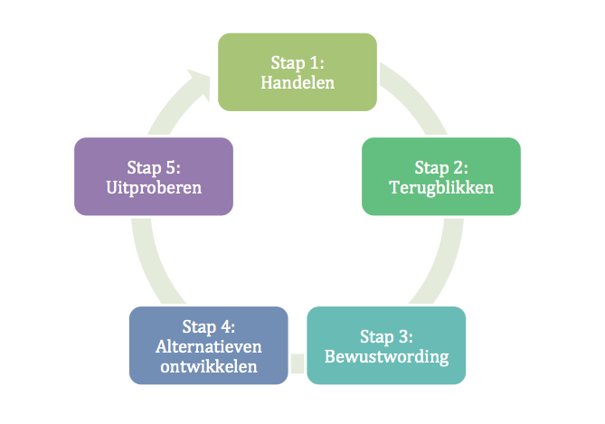

Werkplekleren 1
bestanden :
- Arbeidsopdracht : Vacature 1
- Arbeidsopdracht : Vacature 2
- Arbeidsopdracht : Vacature 3
opdrachten :
-Reflecteren
-Kernwaarden
-Personal Branding
-Reflectieopdracht seminaries
-Opdracht Arbeidersmarkt
-Eindreflectie Opdracht
Pop Opdrachten :
Reflecteren :
Mijn Ervaring
Spiraalmodel van Korthagen :
korte uitleg
De eerste week van school was hectisch en druk. Ondanks dat ik wist waar ik moest zijn, was het soms moeilijk de lokalen te vinden door de menigte. De volle cafetaria en overvolle aula's waren ook een uitdaging. Ik kijk echter uit naar de nieuwe vakken en wat ik ga bijleren.
De drukke cafetaria en gangen zijn vaak frustrerend en stressvol. In de
cafetaria probeer ik extra op te letten en ruimte te geven, en in de klas
blijf ik rustig en geconcentreerd. Ik geloof dat ik met tijd beter met de
drukte kan omgaan en nieuwe mensen zal leren kennen. Ik verwacht dat ik me op den
duur meer op mijn gemak zal voelen.
Omgeving :
schoolcafetaria en de gangen,
Gedrag :
gefrustreerd, gestresseerd
Competities :
De drukte (andere leerlingen)
Overtuigingen :
Met de drukte om leren gaan.
dentiteit :
minder mezelf ga druk maken en respectvol blijven daar medestudenten toe.
Betrokkenheid :
Ik ga naar school dus betrokken zal ik er altijd bij zijn maar ik doe het als doel een diploma te krijgen. En vooral veel kennis + leerstof.
Kernwaarden :
Geluk & Tevredenheid:
Het beheersen van een moeilijk vak geeft me veel voldoening. Mijn vakantie na het ontvangen van loon voelt als een beloning. Het samenwerken aan een lichtstoetwagen versterkt onze band en laat de kracht van teamwork zien. Deze momenten van vreugde, vakantie en samenwerking geven me innerlijke tevredenheid en maken mijn groei waardevoller.
Trots:
- Succesvolle transfer en vlotte vliegreis.
- Overgestapt van bachelor naar graduaat.
- Trots op zelfstandigheid en doorzettingsvermogen.
Mijn kernkwadrant :
Reflectie:
Mijn levensfilosofie is om goed te presteren en daar intrinsiek geluk uit te halen. Vriendschap beschouw ik als familie, wat de diepe emotionele banden erkent.
Allergieën
Piekeren:
Mijn neiging tot piekeren veranderde in de kracht om het positieve te zien, zelfs bij kritiek.
Egoïstisch:
Ervaringen met egoïstisch gedrag hebben me geleerd vriendelijk maar duidelijk te zijn en voor mezelf op te komen.
Respectloos:
Een situatie met respectloos gedrag leerde me rustig te blijven en respect te behouden.

Personal Branding :
Mijn personal branding combineert levendige kleuren met strakke lijnen, wat mijn chaotische maar ordelijke persoonlijkheid weerspiegelt. Ik waardeer rust met een vleugje kleur, kleurrijk maar niet te uitbundig. Kleding moet comfortabel en casual zijn, maar kan ook stijlvol zijn.
Met een zwarte blazer is mijn stijl geschikt voor zakelijke gelegenheden, van vergaderingen tot de werkvloer. Ik experimenteer voortdurend met kleuren en stijlen,
waarbij ik creativiteit wil behouden en ontwikkelen. Hoewel ik toekomstgericht ben en meestal weet wat ik wil,
overvalt onzekerheid me soms. Praktisch ingesteld handel ik vaak eerst en denk ik daarna.
Mijn neiging om te lenen wil ik behouden.
Hoewel ik geen ochtendmens ben, werk ik eraan om dit te verbeteren en een positieve houding te behouden in mijn professionele leven, waarbij ik mezelf aanmoedig om vroeger op te staan en eraan te wennen.

Werkveldverkenning Opdrachten:
Reflectieopdracht seminaries :
- Begin Wat ik er van vond :
De sprekers lieten een zeer positieve indruk op me achter. Dankzij hun inspirerende woorden heb ik nu een duidelijker beeld van de toekomst in grafische vormgeving. Vooral de presentatie van Yappa sprak me aan vanwege de diepgang. Dries benadrukte het belang van thuis vaardigheden blijven ontwikkelen, wat me aansprak. De informele sfeer bij Yappa gaf me het gevoel dat collega's als vrienden samenwerken. Hoewel MonoCode me minder aantrok, waardeer ik nog steeds de inzichten die ik heb opgedaan.
Midden:
Helaas sprak het onderwerp van de laatste spreker, Koen, me minder aan. Ze zijn niet langer bezig met grafisch ontwerpen, wat ik jammer vind. Hun focus ligt nu op coderen en website-ontwikkeling, wat interessant is maar niet helemaal mijn toekomstbeeld. Ze lijken op zoek te zijn naar studenten met expertise in codering, terwijl ik nog in de leerfase ben.
Wat vooral mijn aandacht trok :
Brecht's presentatie sprak me het meest aan. Hij communiceerde goed met het publiek en wist studenten te betrekken. Zijn bedrijf, de Codeurs, past het beste bij mijn idee van een ideaal bedrijf. De hechte band tussen collega's en vrienden spreekt me aan. Het feit dat ze begonnen zijn met slechts twee mensen en nu een bedrijf van vijf mensen hebben, maakte indruk op me.
Eindreflectie Opdracht :
Eindreflectie Portfolio – Werkplekleren 1
Inleiding:
Tijdens mijn Werkplekleren (WPL) 1 heb ik vakinhoudelijke, organisatorische, persoonlijke en technische vaardigheden ontwikkeld. In deze reflectie deel ik mijn groei op het gebied van planning, persoonlijke ontwikkeling en technische uitdagingen. Deze periode heeft mijn grenzen verlegd en mijn begrip verdiept. Daarnaast vond ik het prettig om mijn leerkrachten beter te leren kennen.
Midden:
Organisatorisch Vlak:
Op organisatorisch gebied ontdekte ik dat mijn planningsvaardigheden redelijk goed waren, maar ik had de tijdsinvestering onderschat. Wekelijkse planningen moesten dagelijks worden aangepast, waardoor ik nu beter kan plannen en bijwerken. Ik vond het prettig om dagelijks een planning te hebben, zodat ik wist wat er moest gebeuren en niet doelloos rondhing.
Persoonlijk Vlak:
Tijdens de opleiding ontdekte ik de waarde van samenwerking en hulp vragen. Dit versterkte mijn zelfvertrouwen en bevorderde mijn groei. Ik waardeer nu teamwork en nieuwe uitdagingen meer. Deze ervaring vergrootte mijn openheid en liet zien dat groei een sociaal proces is. Ik kijk optimistisch naar de toekomst en streef naar een balans tussen vastberadenheid, samenwerking en zelfontwikkeling..
Technisch Vlak:
Technisch gezien stuitte ik op onverwachte moeilijkheden en raakte snel gefrustreerd. Door oefening en vastberadenheid maakte ik vooruitgang in digitale vormgeving. Deze uitdagingen versterkten mijn doorzettingsvermogen en verbeterden mijn vaardigheden. Wat begon als een onzekere stap, is nu een spannende reis van groei en zelfontdekking. Mijn passie voor technologie blijft me naar nieuwe hoogten leiden.
Slot:
In WPL 1 heb ik mijn vaardigheden en motivatie versterkt, vooral in codering en JavaScript. In WPL 2 wil ik meer initiatief tonen en mijn softskills verbeteren. Ondanks uitdagingen kijk ik enthousiast naar de toekomst en wil ik mijn competenties verder ontwikkelen. Leren en oefenen hebben mijn technische vaardigheden, zelfbeheersing en vermogen om onder druk te presteren verbeterd. Ik heb mijn sterke en zwakke punten herkend en eraan gewerkt, wat mijn zelfvertrouwen en vastberadenheid heeft versterkt. Daarnaast heb ik het logo en de huisstijl voor BOM (Bo, Noortje en Milla) gemaakt. Het groepswerk, waar bloed, zweet en tranen in zit, is goed verlopen.